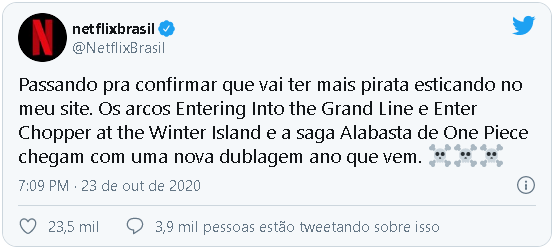

Próximos arcos de One Piece chegam à Netflix em 2021
Chegada de novos personagens e aventura do Bando do Chapéu de Palha em Alabasta já têm dubladores definidos
Pouco mais de uma semana depois de disponibilizar os primeiros 61 episódios do anime, a Netflix anunciou que os próximos arcos de One Piece chegam em 2021 à plataforma. Pelo Twitter, o streaming confirmou que a chegada do Bando do Chapéu de Palha à Grand Line, assim como a aventura dos piratas em Alabasta estrearão já com a nova dublagem – veja abaixo:
Durante a Bentô Live transmitida na Twitch do Omelete, o dublador Glauco Marques, que dá voz a Zoro e dirige o elenco de vozes nacionais de One Piece, anunciou os nomes do elenco que entrarão no anime a partir do 62º episódio.
Fernanda Bulara (Vivi), Agatha Paulita (Chopper), Samira Fernandes (Nico Robin), Marcelo Campos (Ace), Carlos Campanili (Dr. Hiluluk), Junior Nanneti (Appo), Caio Santos (Kuromari), Alex Nimei (Chess), Francisco Júnior (Crocodile), Francisco Bretas (Mr. Three), Élcio Sodré (Mr. Two), Karen Hamaro (Doctorina), Charles Dalla (Igaram), Thiago Zambrano (Mr. Five), Isa Guarnieri (Ms. Golden Week), Jussara Marques (Tashigi), Bianca Alencar (Ms. Valentine) e Luiz Carlos de Moraes (Garp) emprestarão suas vozes no arco de Alabasta
Além disso, Glauco, que teve a companhia de Carol Valença (Luffy) e Adrian Tatini (Usopp), também anunciou que a música de abertura “We Are!” já teve sua letra traduzida.
Os primeiros 61 episódios de One Piece, que integram o arco East Blue, já estão disponíveis na Netflix com dublagem em português.
Novo capítulo de One Piece é adiado por problema de saúde de Eiichiro Oda
Série deve voltar somente em 17 de outubro na Shonen Jump
A conta oficial da Shonen Jump trouxe uma notícia não muito animadora para os fãs de One Piece: o capítulo das aventuras de Luffy previsto para aparecer na edição de número 44 da revista semanal foi adiado por conta de um problema de saúde do autor, Eiichiro Oda (via Anime News Network).
O tweet da Shonen Jump contou que o problema de saúde do autor de One Piece foi inesperado e o deixou em péssimas condições físicas, mas não foi especificado o que causou isso. Com o hiato, One Piece provavelmente voltará somente na Shonen Jump prevista para o dia 17 de outubro.
Vale lembrar que Eiichiro Oda tem um cronograma diferente dos demais autores da Shonen Jump. Por causa do tamanho de One Piece e das preocupações com a saúde do autor, Oda tira uma semana de folga por mês para conseguir desenvolver One Piece com um pouco mais de folga.
One Piece é publicado na Shonen Jump desde 1997 e se aproxima de seu milésimo capítulo, uma marca muito expressiva para um mangá de ação da revista. No Brasil o mangá é publicado pela editora Panini e está encostado na publicação japonesa, e também é possível ler os capítulos mais recentes no MangaPlus (em inglês e espanhol).
Autor de One Piece dá estimativa de mais 5 anos para a obra em entrevista
O mangaká Eiichiro Oda conversou com os Youtubers do Fischer e revelou que pretende terminar One Piece em 5 anos. Será que já temos um possível final?
Que One Piece já é uma das obras de mangás de maiores durações da história isso nós já sabemos, mas será que já tem uma possível data final para o fim de sua publicação? O criador do mangá Eiichiro Oda relatou em um vídeo do YouTube publicado na sexta-feira que “deseja terminar [a história de One Piece] em cinco anos”. Oda falou durante uma visita em vídeo à sua casa pelo popular canal japonês no YouTubers Fischer. O vídeo comemora o lançamento do filme One Piece Stampede.
O membro de Fischer, Ndaho, perguntou a Oda: “Quanto tempo continuará a [história inteira] de One Piece ?” Oda respondeu: “Quero terminar em cinco anos”.
Oda revelou durante sua aparição no programa da Fuji TV, Honma Dekka!? programa em Janeiro deste ano que o final do mangá está “próximo” e que o mangá terá “pouco mais de 100 volumes”.
Oda observou que ele pensava no final do mangá desde que ele ainda estava na faculdade. Além disso, a apresentadora do programa Sanma Akashiya também perguntou a Oda o que aconteceria se um fã conseguisse adivinhar o mesmo final que Oda está escrevendo. Oda respondeu que mudaria o final. [Após a declaração de Oda em janeiro, o colunista do OnePiece.com e do V Jump, Greg Werner, alertou os fãs contra equiparar as estimativas de Oda do progresso da história a prazos precisos].
Oda disse em uma entrevista em Julho de 2016 que havia terminado cerca de 65% do mangá.
Enquanto ele ainda estava no colégio, Oda foi um runner-up para o Prêmio Tezuka para novos criadores da revista da Shueisha, Weekly Shonen Jump em 1992. Ele começou a serialização de One Piece na revista em 19 de Julho de 1997. Até o ano passado, o mangá possuía 360 milhões de cópias impressas no Japão e 70 milhões de cópias impressas em mais de 42 outros países e territórios, totalizando mais de 430 milhões de cópias impressas em todo o mundo. O mangá ganhou o 41th Japan Cartoonist Awards em 2012 e estabeleceu um recorde mundial no Guinness em 2015 por “o maior número de cópias publicadas para a mesma série de quadrinhos por um único autor”.